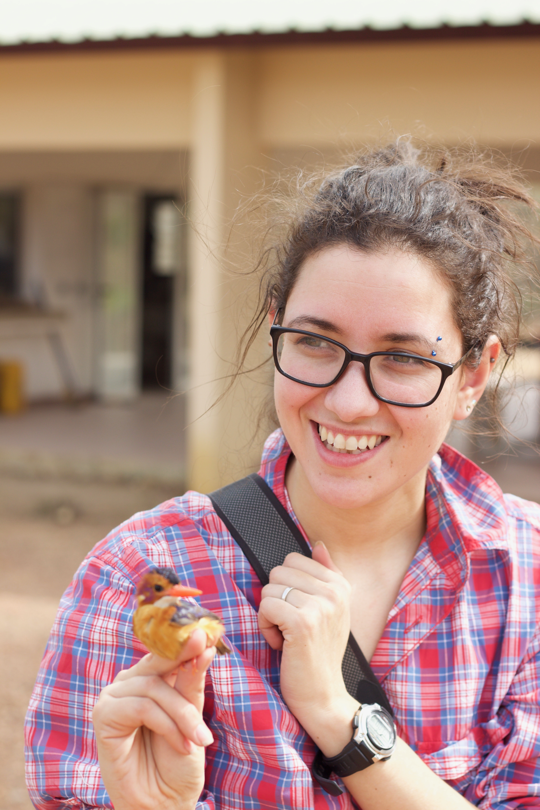
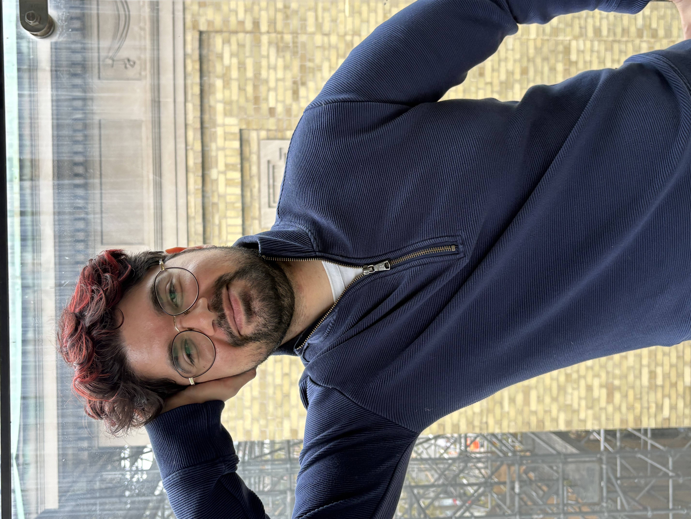
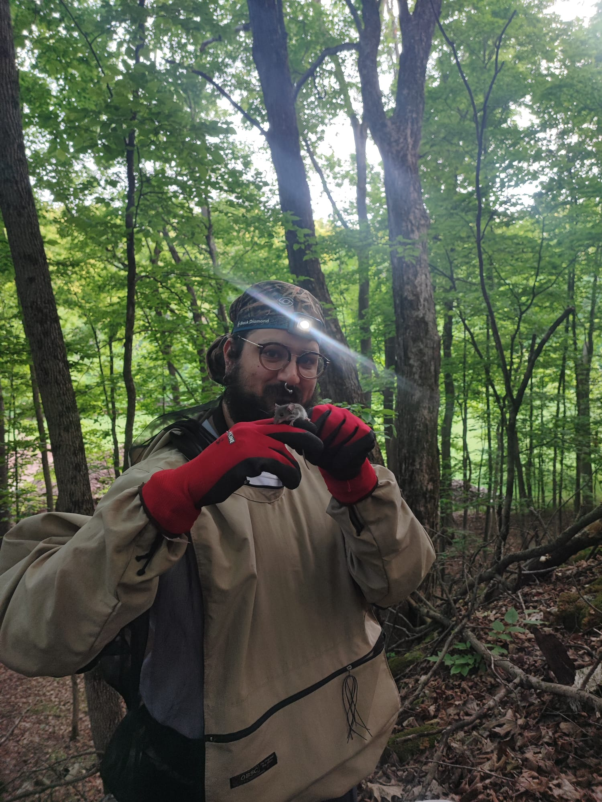
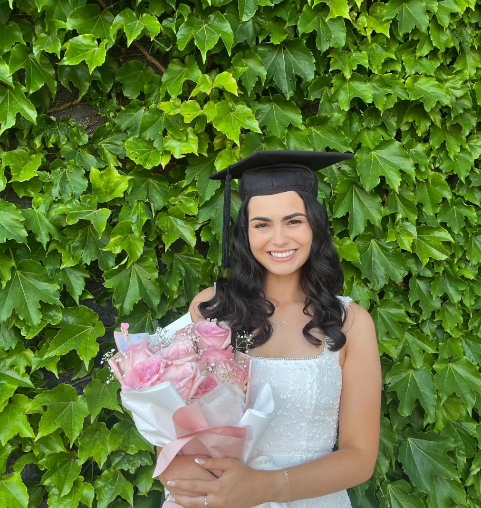
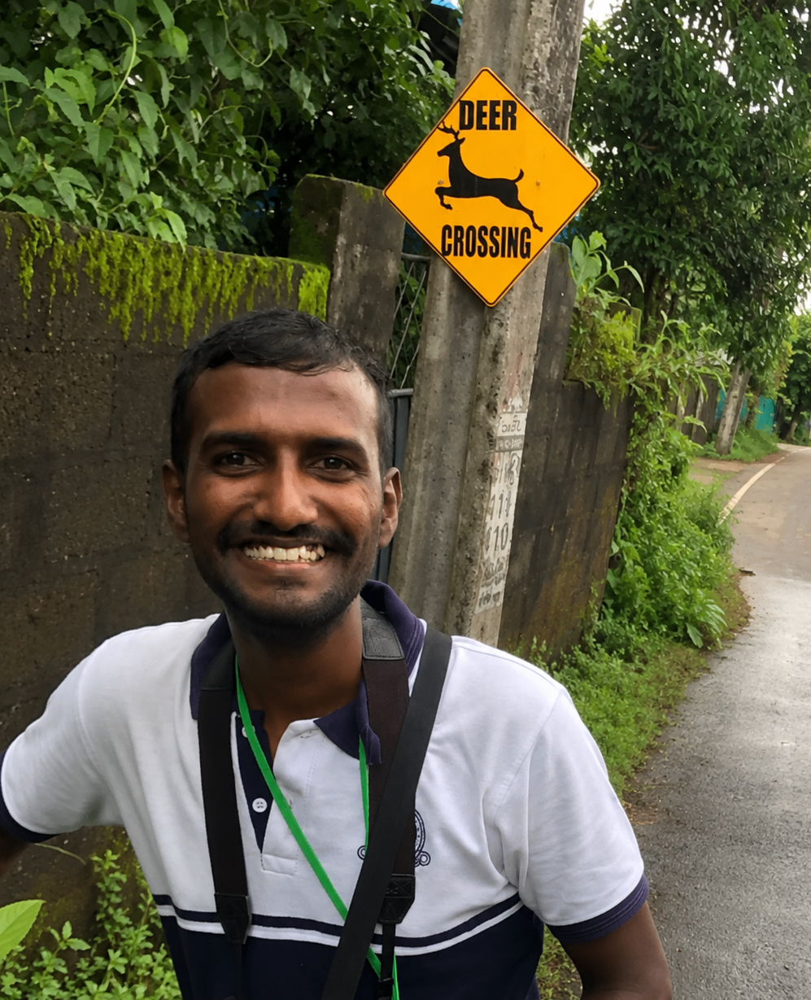
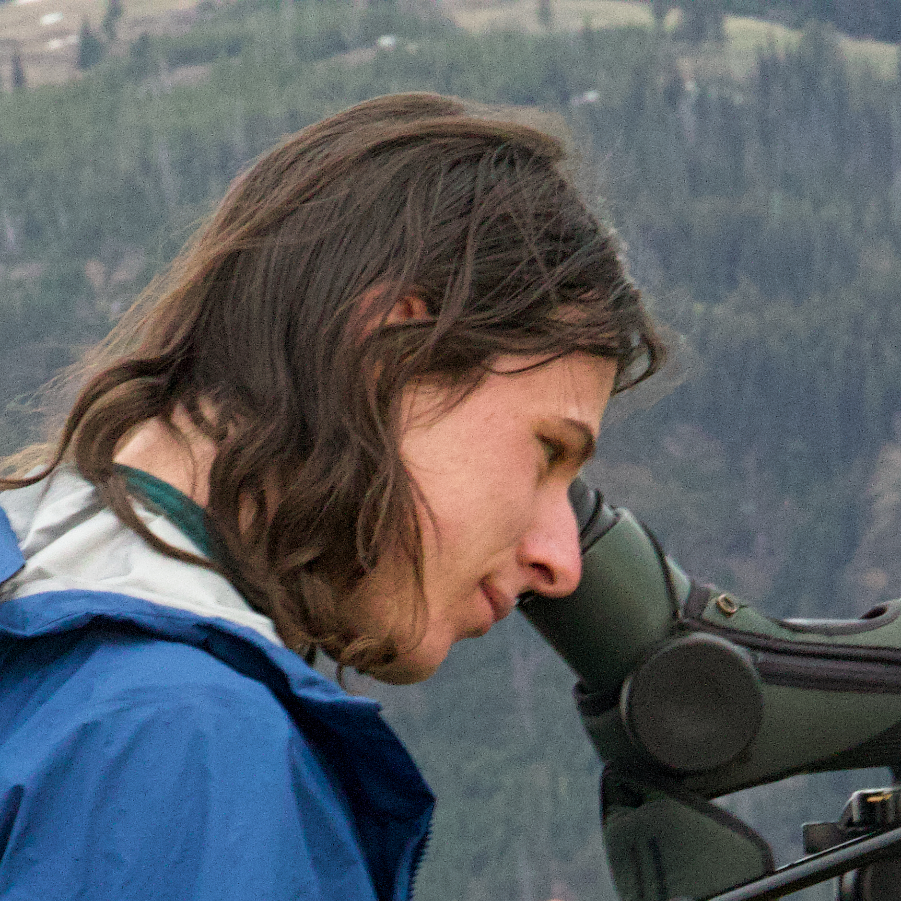
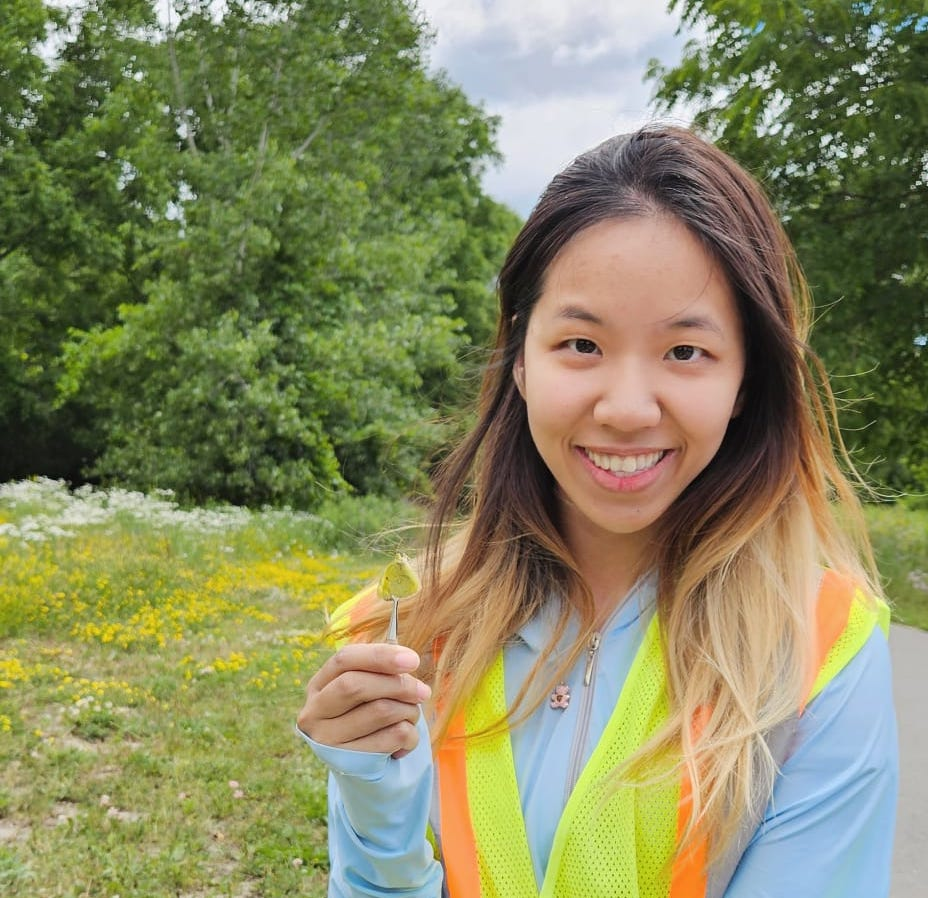
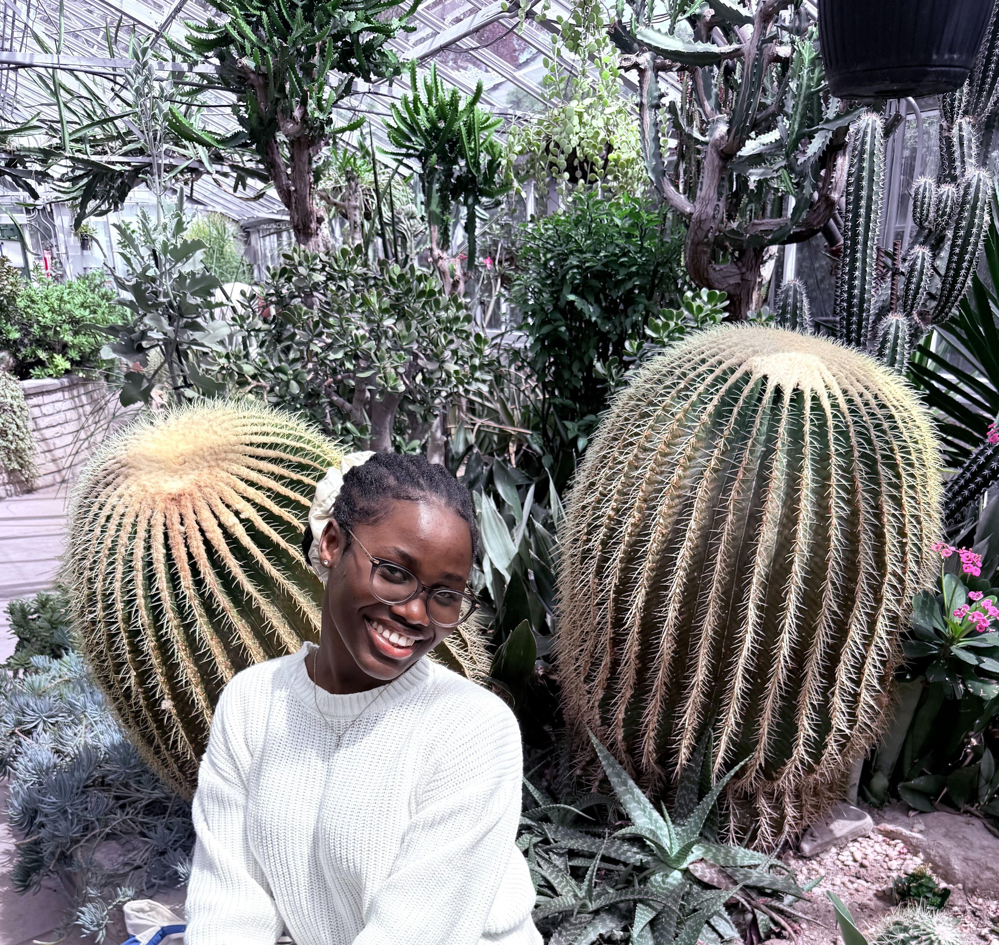
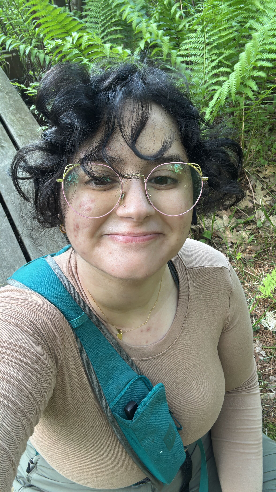

I am an evolutionary ecologist interested in speciation in wild systems. I use quantitative and population genetics and genomics to answer questions about hybridization, reproductive isolation, and competition. I combine empirical field work with theoretical research, specifically individual based simulations, to better understand what happens when closely related species come into secondary contact.
I am currently an Assistant Professor at York University in Toronto, Canada. Previously, I did a postdoc in Alex Buerkle’s lab at the University of Wyoming, and a postdoc in Josephine Pemberton's lab at the University of Edinburgh.
I did my PhD on the interplay between Speciation and Metabolic rate in Anna Qvarnström's lab at Uppsala University in Sweden, and my undergraduate and MSc work with Andrew McAdam at the University of Guelph.
When I'm not thinking about research or teaching, I'm chasing my kids or fur kids around, hiking, kayaking, birdwatching, or sports-watching (and rarely, sports-playing).

I’m a MSc student in the Department of Biology at York University under the supervision of Dr. Eryn McFarlane in the StatsGen lab. My research interests involve using statistical and computational methods in the areas of genetics, ecology, and evolutionary biology. My Master’s thesis will focus on simulating hybrid genotypes and phenotypes to help characterize assortative mating where there is variation in the attractiveness of hybrids.

Sargon works on hybridization in Peromyscus mice at the Queen's University Biological Station using Genotyping-by-Sequencing. They're psyched to see how many species are there and if multiple species are hybridizing, or if there are other outcomes of secondary contact. In their spare time they're an interdiciplinary artist whose practice focuses on sound art, poetry and visuals.

I’m a MSc student investigating the effects of urbanization on hybridization in Colias butterflies in the Greater Toronto Area. I am also a prior BIOL4000 student and Undergraduate research assistant in the StatsGenLab.

I'm a PhD student, and my research looks at hybridization between red and sika deer across Europe. I did my BSc in Zoology at the University of Colombo and studied a feral spotted deer population over 4 years. I did a research-based MSc at the University of Moratuwa (with the University of Central Lancashire) on plastic pollution in fishery harbours. Outside research, I love birdwatching.

I’m an MSc Student interested in the intersection of ecology and evolution, including how organisms adapt to changing environments through processes like evolutionary rescue. My research investigates how genetic components of assortative mating shape gene exchange between hybridizing populations through statistical and computational theoretical models. Outside the lab, you will find me hiking with my camera in search of birds and other wildlife, hanging out with friends, or making and enjoying art.

Hi, I am a third-year undergraduate student. This is my third summer working in StatsGen lab as a RAY student. I don’t have my own thesis yet, so I am basically a helper in the lab right now and mainly work on the Butterfly (Colias) project with Amanda. We caught Colias around the GTA during the flying season from May to October. In my free time, I love traveling around and experiencing new things. I also love playing piano during my leisure time.

I am a 4th year undergraduate student majoring in Biomedical Science at York University. I am working in the StatGen Lab as an NSERC USRA student, under the supervision of Dr. McFarlane. My work involves butterfly sampling and quadrat vegetation survey to better understand how microhabitat variation shapes the distribution of orange, clouded, and hybrid Colias butterflies.

I am a 4th year biomedical science student and I'm currently working as a StatsGen field assistant at Queens University Biological Station (QUBS)! Climate change is affecting the range of migration of Peromyscus leucopus by expanding the northern range to up to 10 km. As a result, hybridization between P. leucopus and P. maniculatus is very likely. I collect DNA samples from hybrids of P. leucopus and P. maniculatus to check if there is locus-specific variation in rates of introgression across the genome.
Long time collaborators of the lab include Professor Liz Mandeville at Northern Michigan University and Professor Josh Jahner at New Mexico Tech.